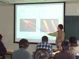

【人材育成】四年次から第一線で活躍
|
四年次から放射光を使って固体物理の実験研究に取り組みます。例年多くの大学院生・四年生が学会や国際会議で成果を発表しています。プレゼンテーション力の強化に力を入れており、多くの学生が学会賞や卒論優秀賞を受賞しています。 週一回、研究室全体でゼミを行い、論文紹介と輪講をします。それに加えて、四年生は、スタッフの指導のもとに「実験研究を進める上で即戦力になる実践的固体物理」について学習します。

セミナー風景 四年生卒論発表優秀賞受賞歴 (Ｈ１０〜Ｈ１９年度) 過去の卒論のテーマ 過去の卒論のテーマ
国内・国際学会発表賞受賞
|

Copyright(C) 広島大学大学院理学研究科物理科学専攻光物性研究室